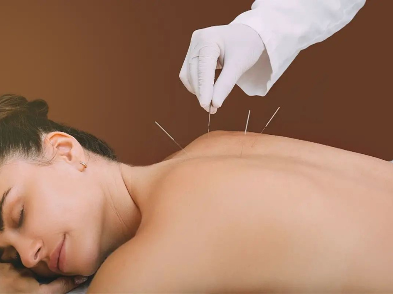

01
Evaluación inicial
Conversación sobre antecedentes, objetivos y expectativas antes de recomendar cualquier intervención.
Un espacio complementario orientado al bienestar general, con alternativas como acupuntura y otros apoyos integrados a una atención personalizada.

El bienestar integral reúne herramientas complementarias que pueden incorporarse dentro de un plan individual, siempre considerando antecedentes, objetivos y la necesidad de mantener coordinación con la atención médica u odontológica convencional cuando corresponda.
Conversación sobre antecedentes, objetivos y expectativas antes de recomendar cualquier intervención.
Técnica complementaria que puede incorporarse en casos seleccionados y siempre tras una evaluación adecuada.
Orientaciones generales para apoyar hábitos de descanso, relajación y bienestar cotidiano.
Revisión de la experiencia y coordinación con otros profesionales cuando sea necesario.
Agenda una evaluación para conversar sobre tus objetivos y revisar qué opciones complementarias son apropiadas para ti.
Las terapias complementarias no sustituyen evaluación, diagnóstico ni tratamiento médico u odontológico cuando estos sean necesarios.